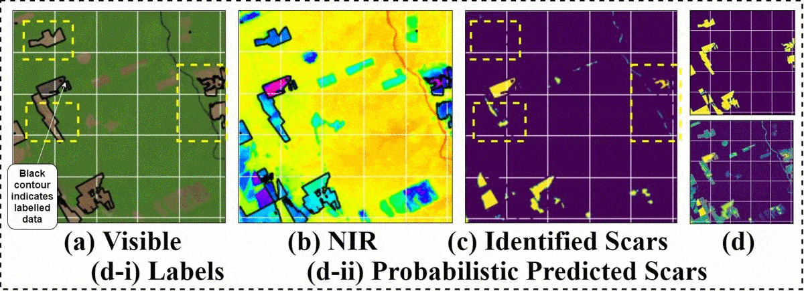

Multimodal Noisy Segmentation based fragmented burn
scars identification in Amazon Rainforest
IEEE International Conference on Systems, Man, and Cybernetics, 2020 (Oral Presentation)
Harvard CRCS AI for Social Good Workshop, 2020
-
Satyam Mohla
Honda Innovation Lab Akasaka, Tokyo
& IIT Bombay, India
satyammohla@gmail.com -
Sidharth Mohla
Nvidia Research India
& IIT Hyderabad, India
sidmohla@gmail.com -
Anupam Guha
IIT Bombay, India
-
Biplab Banerjee
IIT Bombay, India
{kind=link}
Burnings around BR-163 highway, Para,
northern Brazil, in Amazon region. Used with permission from G.Basso, 2019.
Abstract
Detection of burn marks due to wildfires in inaccessible rain forests is important for various disaster management and ecological studies. The fragmented nature of arable landscapes and diverse cropping patterns often thwart the precise mapping of burn scars. Recent advances in remote-sensing and availability of multimodal data offer a viable solution to this mapping problem. However, the task to segment burn marks is difficult because of its indistinguishably with similar looking land patterns, severe fragmented nature of burn marks and partially labelled noisy datasets. In this work we present AmazonNET -- a convolutional based network that allows extracting of burn patters from multimodal remote sensing images. The network consists of UNet: a well-known encoder decoder type of architecture with skip connections commonly used in biomedical segmentation. The proposed framework utilises stacked RGB-NIR channels to segment burn scars from the pastures by training on a new weakly labelled noisy dataset from Amazonia. Our model illustrates superior performance by correctly identifying partially labelled burn scars and rejecting incorrectly labelled samples, demonstrating our approach as one of the first to effectively utilise deep learning based segmentation models in multimodal burn scar identification.
Result

The network correctly segments burn scars, rejecting incorrectly labelled spots and correctly identifying partially labelled or unlabelled
samples. (a) Visible Channel (b) Near Infrared channel (false coloured hsv) (c) Available Labels (including partial/ incorrect labels) (d) Predicted Burn Scars
(e) Binary Burn Scars. The black contour in (a) & (b) denote contour for labelled data(c) for easy visualisation. Yellow boxes denote burn scars which are
correctly labelled or unlabelled. White boxes denote mislabelled/misidentified burn scars
Supported by:
Citation:
@article{mohla2020multimodal,
title={Multimodal Noisy Segmentation based fragmented burn
& scars identification in Amazon Rainforest},
author={Satyam Mohla, Sidharth Mohla, Anupam Guha and Biplab Banerjee
journal={2020 IEEE International Conference on
Systems, Man, and Cybernetics (SMC)},
pages={4122--4126},
year={2020}
}
Acknowledgements
Authors thank Prof. Subhasis Chaudhuri, IIT Bombay & Paulo Fernando Ferreira Silva Filho, Institute for Advanced Studies, Brazil for discussion and productive comments. Authors thank Gustavo Basso for giving us permission to use illustrated figure above freely, & for drawing attention to the wildfires in Amazonia. This work was partially completed as part of TechForSociety initiative, in which authors volunteered their efforts outside the scope of their official duties at no cost. Satyam Mohla and Sidharth Mohla acknowledge recognition from Microsoft for AI for Earth Grant & Shastri Indo-Canadian Institute for SRSF research fellowship. The website template was borrowed from Michaël Gharbi.